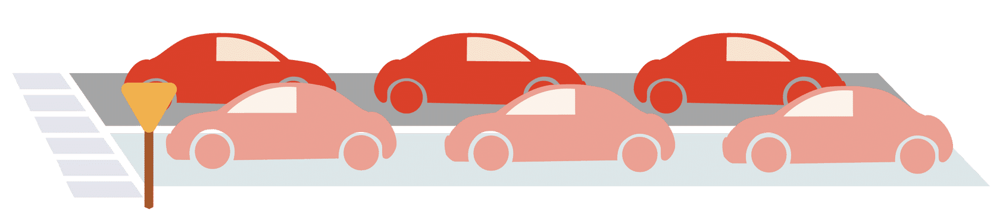

Lesson 3: Tools for Open Data
Navigation
- Introduction to Open Data
- FAIR Principles
- Tools to Help with Planning For Open Data Creation
- Tools to Help with Using and Making Open Data
- Lesson 3: Summary
- Lesson 3: Knowledge Check
Overview
This lesson discusses the concepts, considerations, and tools for making data and results. It starts with a closer look at the FAIR principles and how they apply to data. The lesson includes an introduction to plans, tools, data formats, and other considerations that are related to making data and sharing the results related to that data.
Learning Objectives
After completing this lesson, you should be able to:
- Define the different types of scientific data.
- Define what the acronym FAIR means and explain how it supports the sharing of open data.
- Identify data management practices and tools to locate data in repositories.
- List and explain the purpose of the resources commonly used in making data including the data formats, inspecting data, and assessing 'FAIR'-ness of data.
Introduction to Open Data
Data is a major part of scientific research, and why wouldn’t it be? It informs tools that we use, stories that we read, and decisions that we make on a daily basis.
For instance, the open access Copernicus Emergency Management Service implemented by the European Commission produces 24/7 open access data collected by ESA and NASA satellites to produce maps that inform disaster preparedness and response efforts across the globe. This is only one example among many others demonstrating the value of data, particularly open and public data, in our daily life and for public good.
Data shared openly in scientific research brings tremendous value to the scientific community and beyond, from indigenous communities to urban populations. Before understanding the broad based impact of data, let’s first look at what is data in the context of scientific research. Specifically, we will discuss the definition and characteristics of open data?
What is Data?
Scientific data is any type of information that is collected, observed, or created, in the context of research. It can be:
- Primary – Raw from measurements or instruments
- Secondary – Processed from secondary analysis and interpretations.
- Published – Final format available for use and reuse.
- Metadata – Data about your data.
It is everything that you need to validate or reproduce your research findings, as well as what is required for the understanding and handling of the data.
The following sections discuss ways to ensure that data is fully utilized and accessible to the most amount of people. These best practices center around community frameworks and tools that help researchers manage and share open data.
FAIR Principles

Just like driving on a road, if everyone follows agreed upon rules, everything goes much smoother. The rules don’t need to be exactly the same for every region, but share common practices based on insights about safety and efficiency.
For example, maybe you drive on the left side of the road or the right side. Either is fine, those sort of details are for different communities to decide on. However, there are overarching guidelines shared by communities across the globe, such as the rule to drive on the road not the sidewalk, use a turn signal when appropriate, adhere to lights at intersections that direct traffic, and follow speed limits. Some communities may implement stricter rules than others, or practice them differently, but these guidelines help everyone move around safely through a common understanding of how to drive on roads. For scientific data, these guidelines are called the Findable, Accessible, Interoperable, Reusable or “FAIR” principles. They do to data what their title suggests. That is, these principles make it possible for others (and yourself) to find, get , understand, and use data correctly.
Findable:
To be Findable:
- Data and results are assigned a globally unique and persistent identifier.
- Data are described with rich metadata.
- Metadata clearly and explicitly include the identifier of the data it describes.
- Data and results are registered or indexed in a searchable resource.
Current Enabling Tech:
- DataCite's Metadata Schema
- PIDs: Persistent IDentifiers (additional details in the following
sections)
- Digital Object Identifier (DOI): A top-level and a mandatory field in the metadata of each record - for data, code, publications.
- Open Research and Contributor ID (ORCiD) - A code that uniquely identifies authors and contributors of research products and scholarly communication.
Accessible
To be Accessible:
- Data and results are retrievable by their identifiers using a standardized communication protocol.
- The protocol is open, free, and universally implementable.
- The protocol allows for an authentication and authorization
procedure, where necessary. Data and results are publicly accessible and
licensed under the public domain.
- Metadata are accessible, even when the data are no longer available Data and metadata will be retained for the lifetime of the repository.
- Metadata are stored in high-availability database servers.
Current Enabling Tech:
- File Transfer Protocol (FTP), File Transfer Protocol Secure (FTPS)
- Hypertext Transfer Protocol (HTTP), Hypertext Transfer Protocol Secure (HTTPS)
Note that Microsoft Exchange Server and Skype are examples of proprietary protocols.
Interoperable
To be Interoperable:
- Data uses a formal, accessible, shared, and broadly applicable language for knowledge representation.
- Data uses a known, standardized data format.
- Data use vocabularies that follow FAIR principles.
- Data include qualified references to other (meta)data.
Current Enabling Tech:
- Zenodo uses JSON Schema as internal representation of metadata and offers export to other popular formats such as Dublin Core or MARCXML.
- For certain terms we refer to open, external vocabularies, e.g.: license (Open Definition), funders (FundRef) and grants (OpenAIRE).
- Each referenced external piece of data is qualified by a resolvable URL.
Reusable
To be Reusable:
- Data are richly described with a plurality of accurate and relevant attributes.
- Data are released with a clear and accessible data usage license.
- Data are associated with detailed provenance.
- Data meet domain-relevant community standards.
Current Enabling Tech:
- The metadata record contains a minimum of DataCite's mandatory terms, with optionally additional DataCite recommended terms and Zenodo's enrichments.
- Zenodo is not a domain-specific repository, yet through compliance with DataCite's Metadata Schema, metadata meets one of the broadest cross-domain standards available.
Wilkinson, M. D. et al. The FAIR Guiding Principles for scientific data management and stewardship. Sci.Data 3:160018, doi: 1 0 .1038/sdata.2016.18 (2016)
These are high-level guidelines, and much like open science, implementation is nuanced. Sometimes it takes a group effort and/or a long production process/funding to make data and results FAIR. For other datasets, it could be more straightforward. A well-coordinated data management plan is needed for full compliance with FAIR, and the details of this will be discussed further in Module 3 – Open Data.
Tools to Help with Planning For Open Data Creation
Data Management Plan
The previous lesson describes the requirements of a data management plan (DMP). Below are two open science resources to get you started or creating a data management plan:
DMPTool
The DMPTool in the US helps researchers by featuring a template that lists a funder's requirements for specific directorate requests for proposals (RFP). The DMPTool also publishes other open DMPs from funded projects that can be referenced to improve your own. The Research Data Management Organizer (RDMO) enables German institutions as well as researchers to plan and carry out their management of research data.
ARGOS
ARGOS is used to plan Research Data Management activities of European and nationally funded projects (e.g. Horizon Europe, CHIST-ERA, the Portuguese Foundation for Science and Technology - FCT). ARGOS produces and publishes FAIR and machine actionable DMPs that contain links to other outputs, e.g. publications-data-software, and minimizes the effort to create DMPs from scratch by introducing automations in the writing process. OpenAIRE provides a guide on how to create DMP.
Data Repositories
A data repository is a digital space to house, curate, and share research outputs. Data repositories were originally used to support the needs of research communities. Examples of data repositories include:
- Protein Data Bank uses a data repository to catalog 3D structures of proteins and nucleic acids.
- Genbank of the National Institutes of Health uses a genetic sequence database that contains annotated publicly available nucleic acid sequences.
- The Image Data Resource is a public repository of microscopy bio-image datasets from published studies.
- The Electron Microscopy Public Image Archive is a public resource for raw cryo-EM images.
- OpenNeuro is an open platform for validating and sharing brain imaging data. The tools featured in Open Neuro enable easy access, search, and analysis of annotated datasets.
Open science tools such as data repositories should implement FAIR principles, especially in the case of attribution of persistent identifiers (e.g., DOI), metadata annotation, and machine-readability.
ZENODO
Zenodo is an example of a data repository that allows the upload of research data and creates DOIs. Its popularity among the research community is due to its simplified interface, support of community curation, and feature that enables researchers to deposit diverse types of research outputs; from datasets and reports to publications, software, multimedia content.
DATAVERSE
The Dataverse Project is an open source online application to share, preserve, cite, explore, and analyze research data, available to researchers of all disciplines worldwide for free.
DRYAD
The Dryad Digital Repository is a curated online resource that makes research data discoverable, freely reusable, and citable. Unlike previously mentioned tools, it operates on a membership scheme for organizations such as research institutions and publishers.
DATACITE
Datacite is a global non-profit organization that provides DOIs for research data and other research outputs, on a membership basis.
OSF
The Open Science Framework is an open source platform for sharing, managing, and collaborating research.
Data services and resources for supporting research require robust infrastructure which relies on collaboration. An example of an initiative on the infrastructures of data services comes from the EUDAT Collaborative Data Infrastructure, a sustained network of more than 20 European research organizations.
Private companies also host and maintain online tools for sharing research data and files. For example, Figshare is one example of a free and open access service operated by private companies. It provides DOIs for all types of files and recently developed a restricted publishing model to accommodate intellectual property (IP) rights requirements. It allows sharing the outputs only within a customized Figshare group (could be your research team) or with users in a specific IP range. Additional advances include integration with code repositories, such as GitHub, GitLab, and Bitbucket.
Additional research data repositories can be found in the publicly available Registry of Research Data Repositories. OpenAire, a hosted search engine, also provides a powerful search function of data and repositories. It features a filter for country, type, and thematic area, as well as enables the download of data.
The amount of data, repositories, and different policies can be overwhelming. When in doubt of determining which repository is right for you, consult librarians, data managers and/or data stewards in your institution, or check within your discipline-specific or other community of practice.
Activity 3.1: Explore Zenodo and Sign Up!
Explore open repositories to familiarize yourself with their structure and available product information. The most popular repository at the moment is Zenodo. Review the following 4.5-minute video to get an overview of Zenodo and then sign up for an account. You can use your ORCID to sign up if you have one or made one in the previous lesson.
Tools to Help with Using and Making Open Data
Data Formats
A useful file format can be read into memory by some software. Think of the format as a tool for making data accessible. Easy to use formats feature:
- A simple, easy to understand structure.
- A clear and open specification for the format that is ideally not tied to a specific software product.
- Open software libraries and APIs that can parse the format.
The formats that are considered the most interoperable against the criteria above include Comma Separated Values (CSV), Extensible Markup Language (XML), and JavaScript Object Notation (JSON). Other common formats for researchers include binary array-based formats like Network Common Data Form (NetCDF), Hierarchical Data Format (HDF), Geotiff, Flexible Image Transport System (FITS), and other formats designed for cloud storage and access like Zarr, Cloud Optimized GeoTIFF, and Parquet. Many of these formats have tools that check datasets for compliance and readability.
Inspecting Data
Modern data formats allow the storage of much more than mere data points. Once one adopts these standards (e.g. NetCDF), the discovery of the contents on each file can be aided by a variety of tools which together help map primary data and/or display the associated metadata. Several tools exist for inspecting data, too numerous for all to be mentioned here. Notable tools to start with include:
CSV, XML, JSON - These files can all be opened with most common text editors. There are some tools that can create views of the files that are more user-friendly, such as:
- csv: Microsoft Excel and Google Sheets
- xml: Most internet browsers and with any text editor like Notepad or Microsoft Word or Google Docs
- json: http://json.parser.online.fr/ and https://jsonformatter.org/json-pretty-print
NetCDF, HDF, FITS - These files require special software tools to view their contents. Many of these tools will also visualize the data as well.
- NetCDF and HDF: Most files are easily viewed using the Xarray open-source software library in Python or the ncdf4 library in R.
- FITS: There are many options, a list is provided at https://fits.gsfc.nasa.gov/fits_viewer.html
ZARR, COG, PARQUET - These files require special software tools to view their contents. Many of these tools will also visualize the data as well.
- Zarr: Files are easily viewed using the Xarray open-source software library in Python or the Pizzar library in R.
- COG: Files are viewed using the rioXarray open-source software library in Python or the terra library in R.
- Parquet: Files are viewed using the Pandas open-source software library in Python or the Arrow library in R.
FAIR Assessment
How 'FAIR' is your data? Two groups - FAIRsharing.org and the Research Data Alliance (RDA) - have developed the FAIR Metrics and FAIR Data Maturity Model to help assess the 'FAIR'-ness of a dataset. There are open-source tools that help researchers assess their data:
AUSTRALIAN RESEARCH DATA COMMONS (ARDC)
Online questionnaire (manual) Best for:
- Triggering discussions at the initial stages of considering FAIR implementation
- Identifying areas for improvement
Outputs include:
- Progress bar for each FAIR principle
- Aggregate bar for all
FAIR-CHECKER
Automated via website or API
Best for:
- Scalability to many datasets
- Identifying areas for improvement
Outputs include:
- A chart with scores and details
F-UJI
Automated via website or API
Best for:
- Scalability to many datasets
- Detailed documentation of tool
Outputs include:
- A report and chart with scores and details
FAIR EVALUATION SERVICES
Automated via website or API
Best for:
- Scalability to many datasets
- To generate a custom assessment
Outputs include:
- A detailed report and chart
Lesson 3: Summary
In this lesson you learned:
- The different types of scientific data, including primary, secondary, published, and metadata.
- A list of open science practices to implement FAIR principles that make data and results easily accessible to a wide range of people.
- Digital tools to help plan for making and sharing open data.
Lesson 3: Knowledge Check
Answer the following questions to test what you have learned so far.
Question
01/03
Choose the FAIR Principles from the list below. Select all that apply.
- Reproducible
- Reusable
- Responsible
- Findable
- Interactive
- Interoperable
- Interspersed
- Accessible
- Authorizable
Question
02/03
Which of the following can help make your data FAIR? Select all that apply.
- Get a license for your data
- Make sure you develop your own metadata
- Obtain a PID for your data
Question
03/03
Which of the following are examples of repositories? Select all that apply.
- Zenodo
- Dataverse
- Dryad
- Datacite